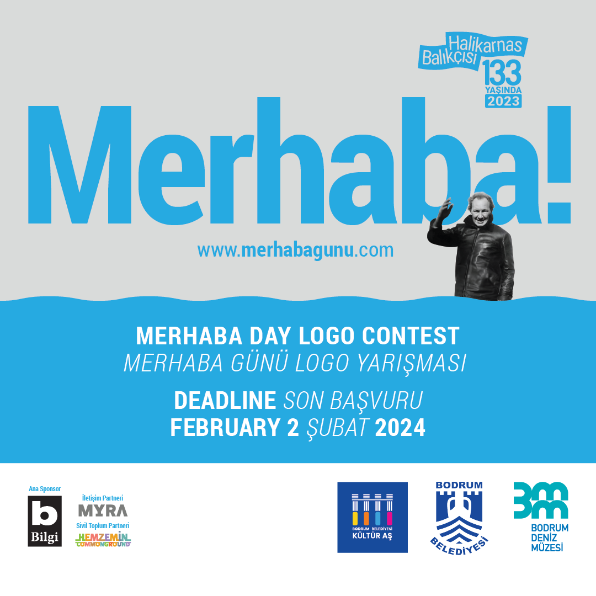

“Merhaba Günü Uluslararası Logo Yarışması” başvuruları sürüyor
Cevat Şakir Kabaağaçlı, nam-ı diğer Halikarnas Balıkçısı’na ait özel koleksiyon ve zengin arşiv malzemesinin bulunduğu Bodrum Belediyesi Kültür A.Ş. bünyesine bağlı Bodrum Deniz Müzesi, “Merhaba Günü Uluslararası Logo Yarışması” düzenlemişti. Bilgi Yayınevi sponsorluğunda düzenlenen yarışmaya başvurular, 2 Şubat 2024 tarihine kadar devam ediyor.